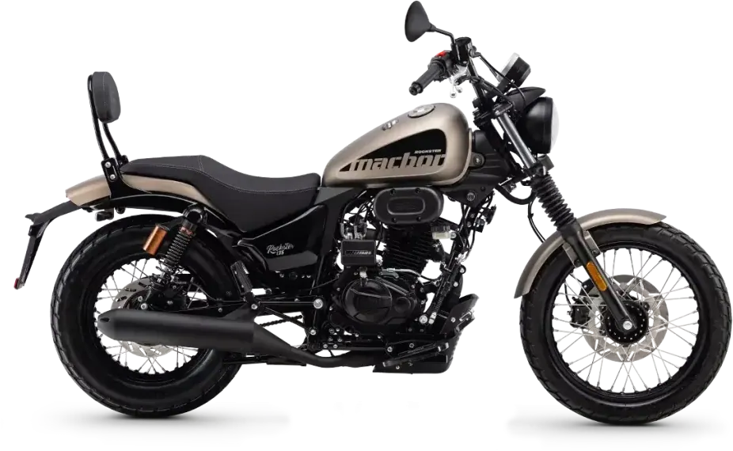
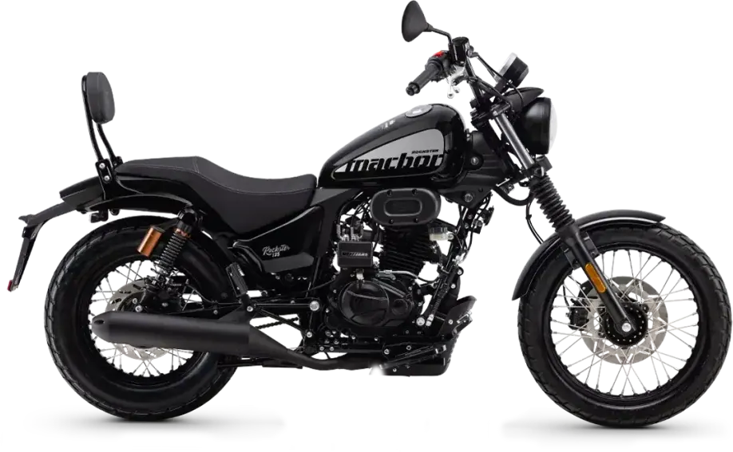
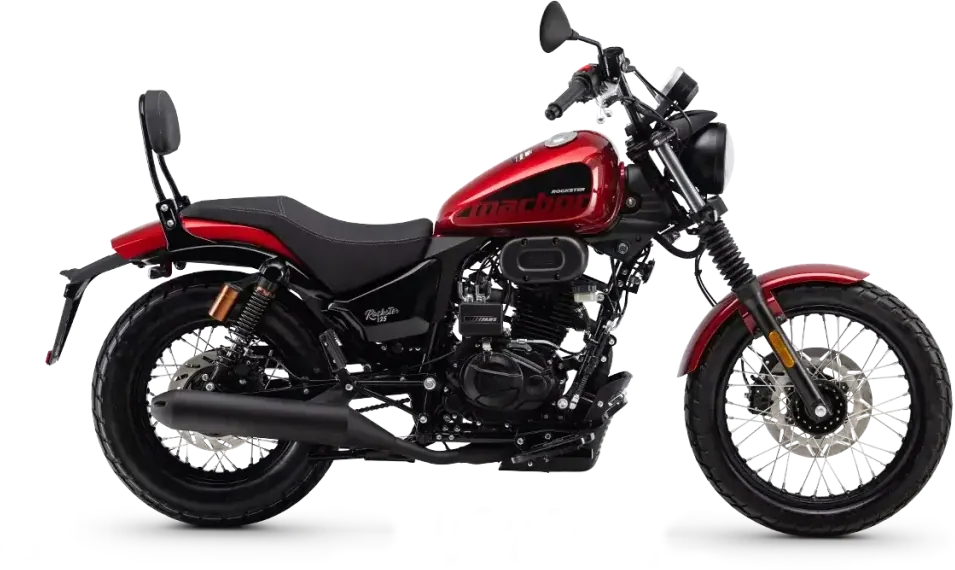

Macbor
Rockster Flat 125 EVO
B·A1 125 cc · Clásicas
Propuesta de OpsPilot para Expomoto Córdoba, en revisión. No es la web oficial: expomotocordoba.es



La nueva Rockster 125 EVO da un paso firme en la evolución del icónico modelo de la gama custom 125 cc de Macbor. Fiel al ADN de la marca, esta versión 2025 incorpora mejoras que se traducen en una experiencia de conducción más potente, segura y refinada .
Su nuevo motor monocilíndrico de 125 cc y 4 válvulas proporciona una potencia máxima de 12,2 CV a 9.500 rpm . Esta evolución mejora la entrega de potencia en un 28% más logrando así una respuesta más viva y eficaz tanto en ciudad como en tramos interurbanos .
En términos de seguridad, incorpora sistema de frenado con ABS marcando un salto cualitativo. La pinza delantera de dos pistones mejora la mordida y la sensibilidad en frenadas , mientras que el nuevo disco delantero convencional ofrecer un tacto más progresivo y estable .
El diseño también ha sido actualizado para reforzar su presencia urbana y su carácter custom. La Rockster 125 EVO estrena nuevos colores, gráficos y detalles estéticos de mayor calidad , logrando una imagen más actual sin perder su esencia clásica.